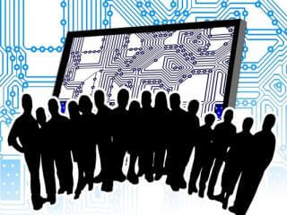

| หน้าแรก | การทำงานของคอมพิวเตอร์ | องค์ประกอบของคอมพิวเตอร์ | การประกอบคอมพิวเตอร์ | ฮาร์ดแวร์คอมพิวเตอร์ |
องค์ประกอบของคอมพิวเตอร์ มี 4 ส่วน คือ ฮาร์ดแวร์, ซอฟต์แวร์, บุคลากร, ข้อมูลและสารสนเทศ คอมพิวเตอร์ คือ อุปกรณ์ทางอิเล็กทรอนิกส์ electronic device (อิเล็กทรอนิกส์ ดีไว) ที่มนุษย์ใช้เป็นเครื่องมือช่วยในการจัดการกับข้อมูลที่อาจเป็นได้ทั้งตัวเลข ตัวอักษร หรือสัญลักษณ์อื่นที่ใช้แทนความหมายในสิ่งต่าง ๆ คอมพิวเตอร์สามารถทำงานได้หลากหลายรูปแบบ ขึ้นอยู่กับชุดคำสั่งที่เลือกมาใช้งาน ทำให้สามารถนำคอมพิวเตอร์ไปประยุกต์ใช้งานได้อย่างกว้างขวาง ระบบคอมพิวเตอร์ประกอบด้วยองค์ประกอบสำคัญ 4 ส่วน คือ ฮาร์ดแวร์, ซอฟต์แวร์, บุคลากร, ข้อมูลและสารสนเทศ
Hardware (ฮาร์ดแวร์) 1. Hardware (ฮาร์ดแวร์) คือ ลักษณะทางกายของเครื่องคอมพิวเตอร์ ซึ่งหมายถึงตัวเครื่องคอมพิวเตอร์ และอุปกรณ์รอบข้าง peripheral (เพอริพีรีว) ที่เกี่ยวข้อง เช่น ฮาร์ดดิส , เครื่องพิมพ์, ซีพียู, เมนบอร์ด, แรม, การ์ดจอ, ไดร์ฟ ดีวีดี, เคส, จอภาพ, คีบอร์ด, เมาส์ เป็นต้น ฮาร์ดแวร์ประกอบด้วย
Software (ซอฟต์แวร์) 2. Software (ซอฟต์แวร์) คอมพิวเตอร์ฮาร์ดแวร์ที่ประกอบออกมาจากโรงงานจะยังไม่สามารถทำงานใด ๆ เนื่องจากต้องมี Software (ซอฟต์แวร์) ซึ่งเป็นชุดคำสั่งหรือโปรแกรมที่สั่งให้ฮาร์ดแวร์ทำงานต่าง ๆ ตามต้องการ โดยชุดคำสั่งหรือโปรแกรมนั้นจะเขียนขึ้นมาจาก ภาษาคอมพิวเตอร์ Programming Language (โปรแกรมิงแลงเกท) ภาษาใดภาษาหนึ่ง และมี โปรแกรมเมอร์ Programmer (โปรแกรมเมอร์) หรือนักเขียนโปรแกรมเป็นผู้ใช้ภาษาคอมพิวเตอร์เหล่านั้นเขียนซอฟต์แวร์ต่าง ๆ ขึ้นมา ซอฟต์แวร์ สามารถแบ่งออกเป็นสองประเภทใหญ่ ๆ คือ  บุคลากร Peopleware (พิเพิลแวร์) 3. บุคลากร Peopleware (พิเพิลแวร์) เครื่องคอมพิวเตอร์โดยมากต้องใช้บุคลากรสั่งให้เครื่องทำงาน เรียกบุคลากรเหล่านี้ว่า ผู้ใช้ หรือ user (ยูเชอร์)
4. ข้อมูลและสารสนเทศ Data Information (ดาต้า อิมฟอเมชัน) ในการทำงานต่าง ๆ จะต้องมีข้อมูลเกิดขึ้นตลอดเวลา ข้อมูลที่เกี่ยวข้องกับงานที่ถูกเก็บรวบรวมมาประมวลผล เพื่อให้ได้สารสนเทศที่เป็นประโยชน์ต่อผู้ใช้ ซึ่งในปัจจุบันมีการนำเอาระบบคอมพิวเตอร์มาเป็นข้อมูลในการดัดแปลงข้อมูลให้ได้ประสิทธิภาพ โดยความแตกต่างระหว่าง ข้อมูล และ สารสนเทศ |